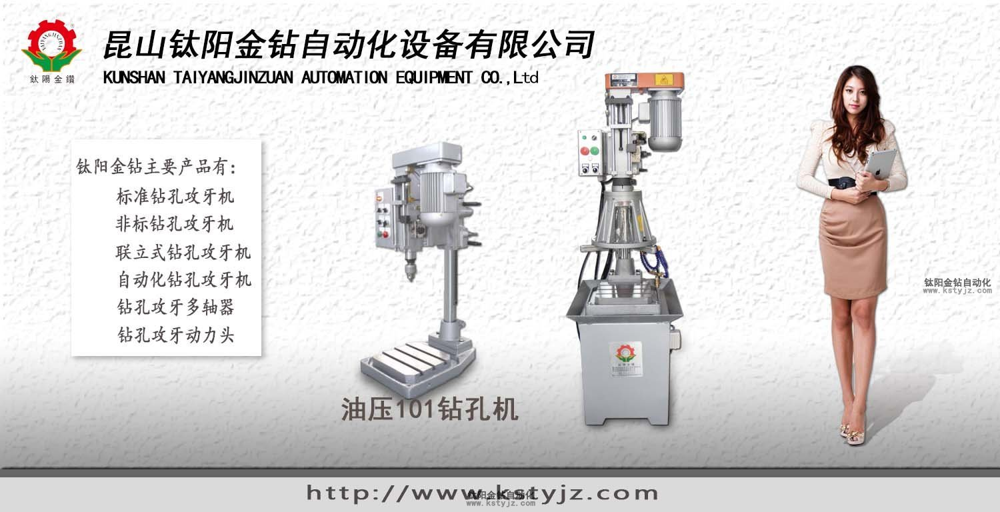
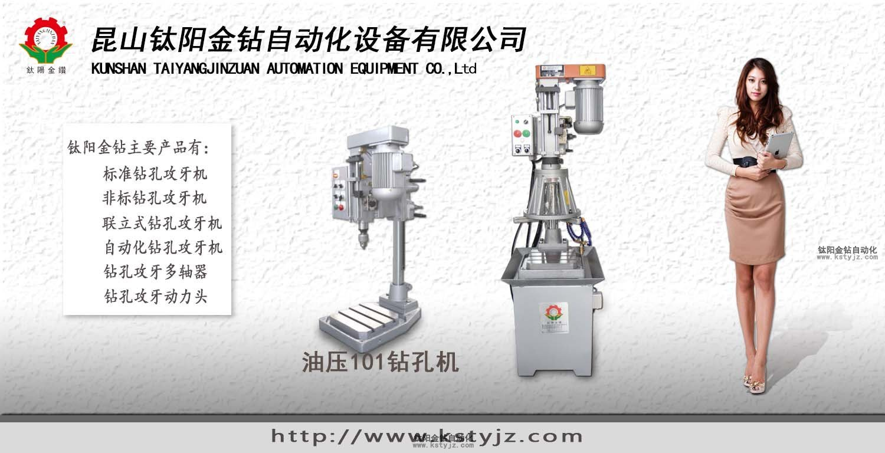
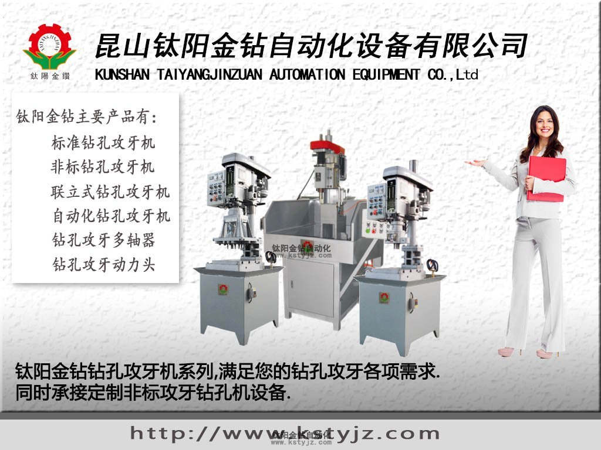

自動攻牙機在加工時產生廢品的原因及防止方法
文章出處：鈦陽金鑽責任編輯：kstyjz人氣：發表時間：2015-04-21 11:07
自動攻牙機在加工時產生廢品的原因及防止方法
文 / 鈦陽金鑽


攻牙機在工作時，產生廢品的原因主要以下幾點，我們給大家分別講述及介紹產生廢品的方法：
A.報廢原因
1.對低碳鋼等塑性好的材料套絲時．未加潤滑冷卻液，板牙把工件上螺紋粘去一部分
1.對低碳鋼等塑性好的材料套絲時．未加潤滑冷卻液，板牙把工件上螺紋粘去一部分
2.套絲時板牙一直不回轉，切屑堵塞把螺紋啃環
3.被加工的圓桿直徑太大
4.板牙歪斜太多，在借正時造成爛牙
防止方法
1．對塑性材料攻絲時一定要加適合的潤滑冷卻液
2．板牙正轉1~1.5圈後，就要反轉0.25~0.5圈，使切屑斷裂
3．把圓桿加工到合適的尺寸
4．套絲對板牙端面要與圓桿軸線垂直．並經常檢查。發現略有歪斜就要
及時借正
B.報廢原因
1.圓桿端頭倒角沒倒好，使板牙端面與圓桿放不垂直
2.板牙套絲時兩手用力不均勻，使板牙端面與圓桿不垂直，圓桿外徑太小
1．圓桿端頭要按要求倒角，四周斜角要大小一樣
防止方法
2．套絲時兩手用力要均勻，要經常檢查板牙端面與圓桿是否垂直，並及
時糾正圓桿外徑是否在上表中規定的範圍內
報廢原因
1.套絲時鉸手擺動，不得不多次借正，造成螺紋中徑小了
2.板牙切入圓桿後。還用力壓板牙鉸手
3.活動板牙、開口後的圓板
防止方法
1．套絲時板牙鉸手要握穩
2．板牙切入後，只要均勻便板牙旋轉即可，不能再加力下壓
3．活動板牙，開口後的圓板
3.被加工的圓桿直徑太大
4.板牙歪斜太多，在借正時造成爛牙
防止方法
1．對塑性材料攻絲時一定要加適合的潤滑冷卻液
2．板牙正轉1~1.5圈後，就要反轉0.25~0.5圈，使切屑斷裂
3．把圓桿加工到合適的尺寸
4．套絲對板牙端面要與圓桿軸線垂直．並經常檢查。發現略有歪斜就要
及時借正
B.報廢原因
1.圓桿端頭倒角沒倒好，使板牙端面與圓桿放不垂直
2.板牙套絲時兩手用力不均勻，使板牙端面與圓桿不垂直，圓桿外徑太小
1．圓桿端頭要按要求倒角，四周斜角要大小一樣
防止方法
2．套絲時兩手用力要均勻，要經常檢查板牙端面與圓桿是否垂直，並及
時糾正圓桿外徑是否在上表中規定的範圍內
報廢原因
1.套絲時鉸手擺動，不得不多次借正，造成螺紋中徑小了
2.板牙切入圓桿後。還用力壓板牙鉸手
3.活動板牙、開口後的圓板
防止方法
1．套絲時板牙鉸手要握穩
2．板牙切入後，只要均勻便板牙旋轉即可，不能再加力下壓
3．活動板牙，開口後的圓板

昆山鈦陽金鑽自動化設備有限公司願意與您進行最真誠的溝通。 TEL-5516 0295
上一篇：昆山鈦陽金鑽精工機械教您如何正確使用自動攻 | 下一篇：攻牙機加工故障的模糊診斷---科普文
相關資訊
- 自動攻牙機在加工時產生廢品的原因及防'>自動攻牙機在加工時產生廢品的原因及防
- 攻牙機加工故障的模糊診斷---科普文'>攻牙機加工故障的模糊診斷---科普文
- 工廠的攻牙機設備保養制度'>工廠的攻牙機設備保養制度
- 日常生產中鑽孔攻牙機的操作'>日常生產中鑽孔攻牙機的操作
- 鈦陽金鑽標準攻牙機售中服務'>鈦陽金鑽標準攻牙機售中服務
- 自動化對於鑽孔攻牙機的優點'>自動化對於鑽孔攻牙機的優點
- 昆山鑽孔攻牙加工中心鑽孔機廠家-鈦陽金'>昆山鑽孔攻牙加工中心鑽孔機廠家-鈦陽金
- 昆山鑽孔攻牙機鑽孔機廠家鑽孔機報價'>昆山鑽孔攻牙機鑽孔機廠家鑽孔機報價
- 昆山自動攻牙機攻牙機廠家-鈦陽金鑽提供'>昆山自動攻牙機攻牙機廠家-鈦陽金鑽提供
- 攻牙機是電動的好還是氣動的好-攻牙機廠'>攻牙機是電動的好還是氣動的好-攻牙機廠


推薦文章
- 自動攻牙機在加工時產
- 攻牙機加工故障的模糊
- 為什麼鑽孔機和攻牙機
- 日常生產中鑽孔攻牙機
- 昆山鑽孔攻牙加工中心
- 昆山鑽孔攻牙機鑽孔機
- 昆山自動攻牙機攻牙機
- 攻牙機是電動的好還是
- 非標訂製擴孔專用機
- 國內機器人產業與技術